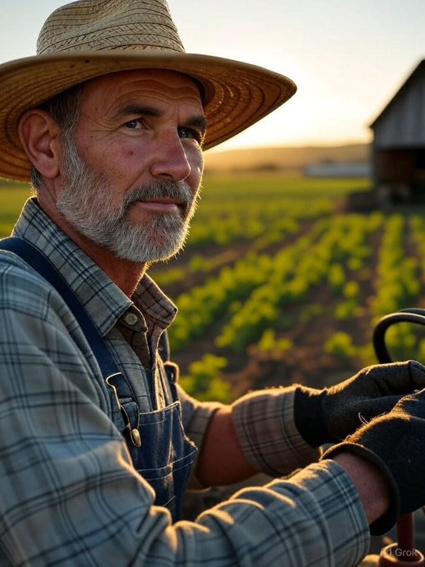
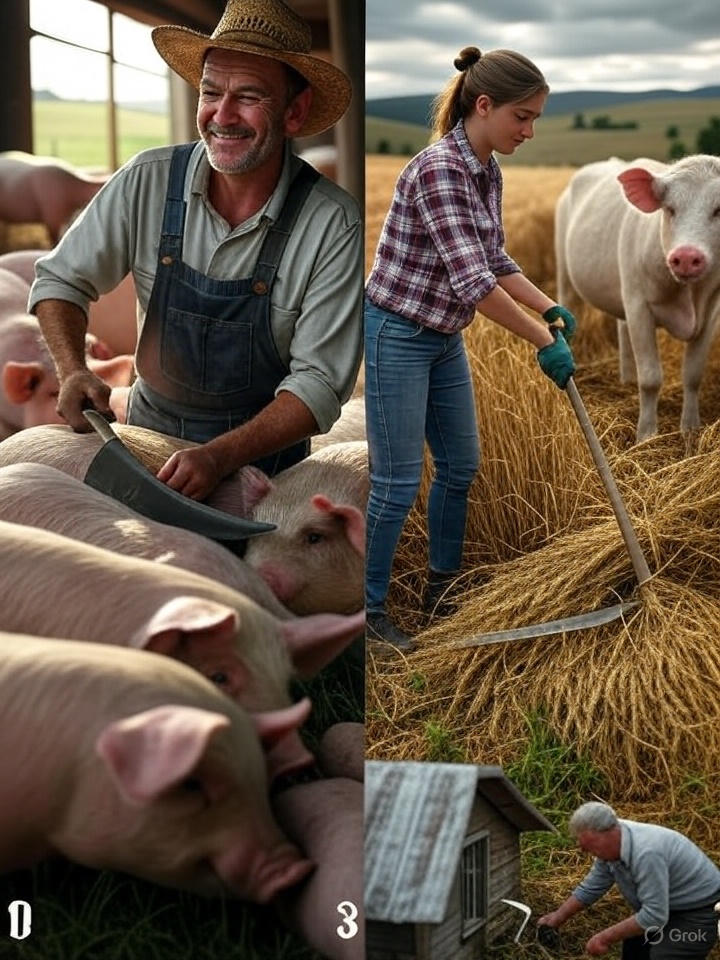
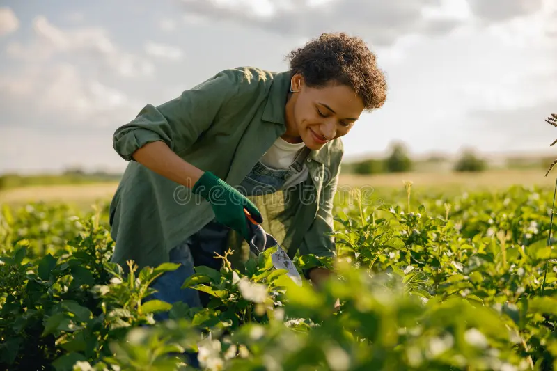
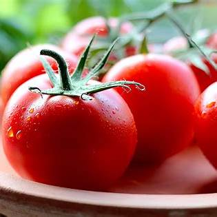
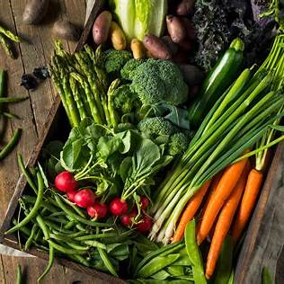
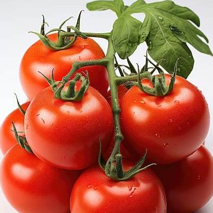
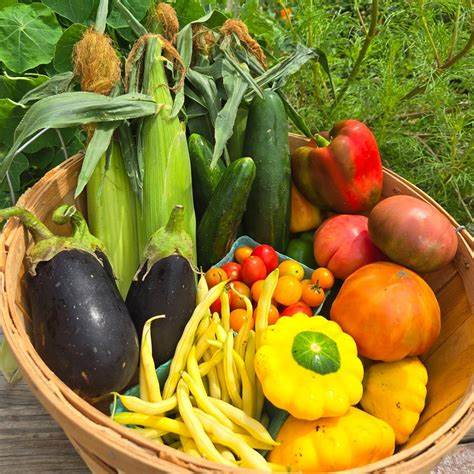

About UrbanRoots CSA
Meet Our Staff

Sarah Johnson
Founder & Head Farmer

Mark Lee
Operations Manager

Anna Smith
Community Coordinator
What Our Clients Say
"UrbanRoots delivers the freshest veggies I've ever had. Love supporting local farmers!" – Emma R.
"The CSA box has completely changed how my family eats. Fresh, seasonal, and delicious!" – John M.
"Joining UrbanRoots was the best decision. Their produce tastes like it’s straight from the garden." – Priya K.
Our Fresh Produce



